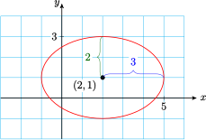

Section 9.3 Conic Sections: Hyperbolas
¶If a cone is cut by a plane parallel to its axis, the intersection is a hyperbola, the only conic section made of two separate pieces, or branches. Hyperbolas occur in a number of applied settings. The navigational system called LORAN (long-range navigation) uses radio signals to locate a ship or plane at the intersection of two hyperbolas. Satellites moving with sufficient speed will follow an orbit that is branch of a hyperbola; for example, a rocket sent to the moon must be fitted with retrorockets to reduce its speed in order to achieve an elliptical, rather than hyperbolic, orbit about the moon.
The hyperbola is defined as follows.
Definition 9.27. Hyperbola.
A hyperbola is the set of points in the plane, the difference of whose distances from two fixed points (the foci) is a constant.
If the origin is the center of the hyperbola and the foci (labeled \(F_1\) and \(F_2\) on the graphs above) lie on the axes, we can use the distance formula to derive its equation.
Central Hyperbola.
The equation of a hyperbola with center at the origin is
In the first case, the two branches of the hyperbola open left and right, so the graph has \(x\)-intercepts at \(a\) and \(-a\) but no \(y\)-intercepts. (See figure above left.) The segment joining the \(x\)-intercepts is the transverse axis, and its length is \(2a\text{.}\) The segment of length \(2b\) is called the conjugate axis The endpoints of the transverse axis are the vertices of the hyperbola.
In the second case, the graph has \(y\)-intercepts at \(b\) and \(-b\) but no \(x\)-intercepts—the two branches open up and down. (See figure above right.) Here the \(y\)-intercepts are the vertices, so the transverse axis is vertical and has length \(2b\text{.}\) The conjugate axis has length \(2a\text{.}\)
Subsection Asymptotes of Hyperbolas
The branches of the hyperbola approach two straight lines that intersect at its center. These lines are asymptotes of the graph, and they are useful as guidelines for sketching the hyperbola. We first sketch a rectangle (called the central rectangle) whose sides are parallel to the axes and whose dimensions are \(2a\) and \(2b\text{.}\) Thesasymptotes are the diagonals of this rectangle.
Example 9.28.
Graph \(\dfrac{y^2}{9} - \dfrac{x^2}{4} = 1\)
The graph is a hyperbola with center at the origin. The \(y^2\)-term is positive, so the branches of the hyperbola open upward and downward. Because \(a^2=4\) and \(b^2=9\text{,}\) we have \(a=2\) and \(b=3\text{,}\) and the vertices are \((0,3)\) and \((0,-3)\text{.}\) There are no \(x\)-intercepts.
We construct the central rectangle with dimensions \(2a=4\) and \(2b=6\text{,}\) as shown in the figure. Then we draw the asymptotes through the diagonals of the rectangle. The asymptotes have slopes \(\pm \dfrac{3}{2}\text{.}\) Finally, we sketch the branches of the hyperbola through the vertices and approaching the asymptotes.

Notebook 9.29. Practice 1.
The equation of a central hyperbola may be written as
where \(A\) and \(B\) have opposite signs and \(C \ne 0\text{.}\) As with ellipses, it is best to rewrite the equation in standard form in order to graph it.
Example 9.30.
Write the equation \(4y^2-x^2=16\) in standard form and describe the important features of its graph.
We first divide each side by 16 to obtain
The graph is a central hyperbola with \(y\)-intercepts \(2\) and \(-2\text{,}\) as shown in the figure. The slopes of the asymptotes are given by
so the equations of the asymptotes are

Notebook 9.31. Practice 2.
Notebook 9.32. QuickCheck 1.
We can find exact coordinates of points on a hyperbola by substituting a value for one variable and solving for the other variable.
Example 9.33.
Find the exact coordinates of any points with \(x\)-coordinate \(x=2\) on the hyperbola with equation \(4x^2-y^2=16\text{.}\) Plot and label those points on the hyperbola.
We substitute in the given equation.
There are two points with \(x=2\text{,}\) namely \(\left(2, \sqrt{5}\right)\) and \(\left(2, -\sqrt{5}\right)\text{,}\) as shown in the figure.
Subsection The Central Conics
The fourth conic section, after circles, ellipses, and hyperbolas, is the parabola. We have already encountered parabolas in our study of quadratic functions. In particular, the graph of \(y = ax^2\) has its vertex at the origin and opens up or down, depending on the sign of \(a\text{.}\) The graph of \(x = ay^2\) is a parabola that opens to the left or right. There is also a geometric definition of a parabola, but we will not discuss that here

Example 9.34.
Write each equation in standard form and describe its graph.
\(x^2=6y^2+8\)
\(x^2=\dfrac{4-y^2}{2}\)
-
The equation \(x^2=6y^2+8\) is equivalent to
\begin{gather*} x^2-6y^2=8\qquad \text{ or }\qquad \frac{x^2}{\left( \sqrt{8} \right)^2} - \frac{y^2}{\left( \frac{2}{\sqrt{3}} \right)^2}=1 \end{gather*}The graph is a hyperbola that opens left and right.
-
The equation \(x^2=\dfrac{4-y^2}{2}\) is equivalent to
\begin{gather*} x^2+y^2=4\qquad \text{ or }\qquad \frac{x^2}{\left( \sqrt{2} \right)^2} + \frac{y^2}{2^2}=1 \end{gather*}The graph is an ellipse with major axis on the \(y\)-axis because \(2\gt\sqrt{2} \text{.}\)
Notebook 9.35. Practice 4.
Subsection Translated Hyperbolas
The standard form for the equations of hyperbolas centered at the point \((h,k)\) can be derived using the distance formula and the definition of hyperbola.
Hyperbolas.
The equation for a hyperbola centered at \((h,k)\) has one of the two standard forms:
The first equation describes a hyperbola whose transverse axis is parallel to the \(x\)-axis, so that the branches open left and right, and the second equation describes a hyperbola whose transverse axis is parallel to the \(y\)-axis, so that the branches open up and down, as shown below.

Example 9.36.
- Graph \(\dfrac{(x-3)^2}{8} - \dfrac{(y+2)^2}{10} = 1\)
- Find the equations of the asymptotes.
-
The graph is a hyperbola with
\begin{gather*} (h,k) = (3,-2),\quad a = \sqrt{8} = 2\sqrt{2},\quad \text{ and } b=\sqrt{10} \end{gather*}Because the \(x^2\)-term is positive, the branches open left and right. The coordinates of the vertices are thus \((3+2\sqrt{2},-2)\) and \((3-2\sqrt{2},-2)\text{,}\) or approximately \((5.8,-2)\) and \((0.2,-2)\text{.}\) The ends of the conjugate axis are \((3,-2+\sqrt{10}\)) and \((3,-2-\sqrt{10}\)), or approximately \((3,1.2)\) and \((3,-5.2)\text{.}\)
The central rectangle is centered at the point \((3,-2)\) and extends to the vertices in the horizontal direction and to the ends of the conjugate axis in the vertical direction. We draw the asymptotes through the opposite corners of the central rectangle, and sketch the hyperbola through the vertices and approaching the asymptotes to obtain the graph shown below.
-
Both asymptotes pass through the center of the hyperbola, \((3,-2)\text{.}\) Their slopes are
\begin{gather*} \frac{\sqrt{10}}{\sqrt{8}} = \frac{\sqrt{5}}{2}\quad \text{ and } \dfrac{-\sqrt{5}}{2} \end{gather*}We substitute these values into the point-slope formula to find the equations
\begin{gather*} y + 2 = \frac{\sqrt{5}}{2}(x-3)\quad \text{ and } \quad y + 2 = \frac{-\sqrt{5}}{2}(x-3) \end{gather*}
Notebook 9.37. Practice 5.